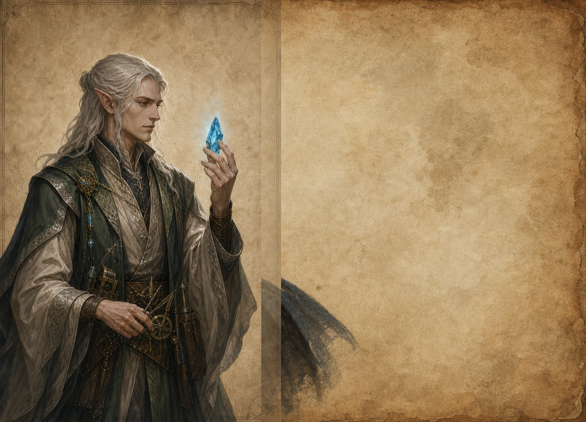

Расы / Народ
Эльфы
Редкий долгоживущий народ, связанный с наукой и обработкой руды.

История
Эльфы сохранили влияние не числом, а длительной памятью домов, школ и мастерских традиций.
Биология
Живут около двух веков, взрослеют медленнее людей и лучше переносят долгую интеллектуальную нагрузку.
Культура
Их культура строится вокруг точности, репутации дома и способности довести знание до проверяемой формы.
Архитектура
Эльфийская архитектура любит вертикаль, мосты, световые шахты и горные комплексы, встроенные в рельеф.
Военное дело
Войска эльфов малочисленны, но хорошо обучены. Они избегают прямого истощения и предпочитают позиционное преимущество.
Отношение к магии
Магия для эльфов - дисциплина исследования. Чудо считается незавершенной формулой, пока его нельзя повторить.
Отношение к другим расам
Люди считают эльфов холодными, дворфы спорят с ними о ремесле, Маркор пытается купить их знания, а Велтир - поставить на учет.
Известные личности
Наиболее известны главы Домов, рудные теоретики, архитекторы перевалов и наставники закрытых школ.
Интересные факты
Эльф может помнить договор, заключенный до рождения деда своего нынешнего оппонента.